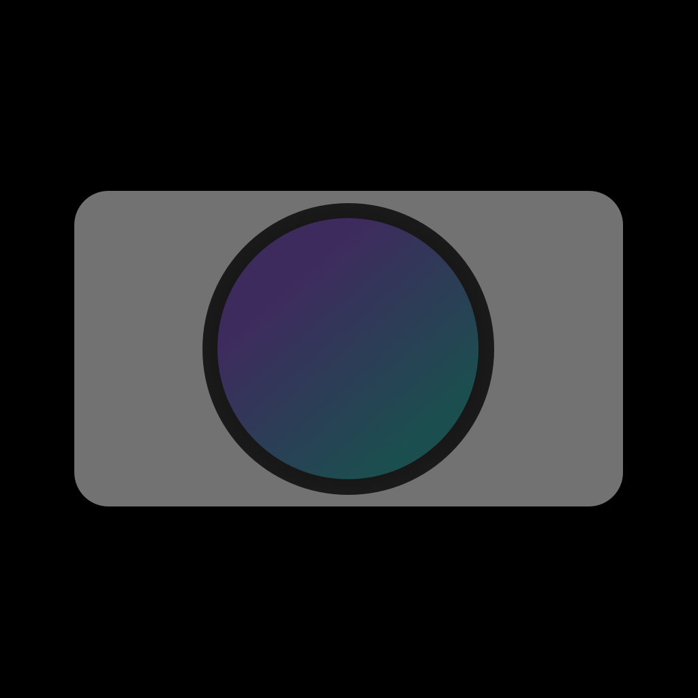
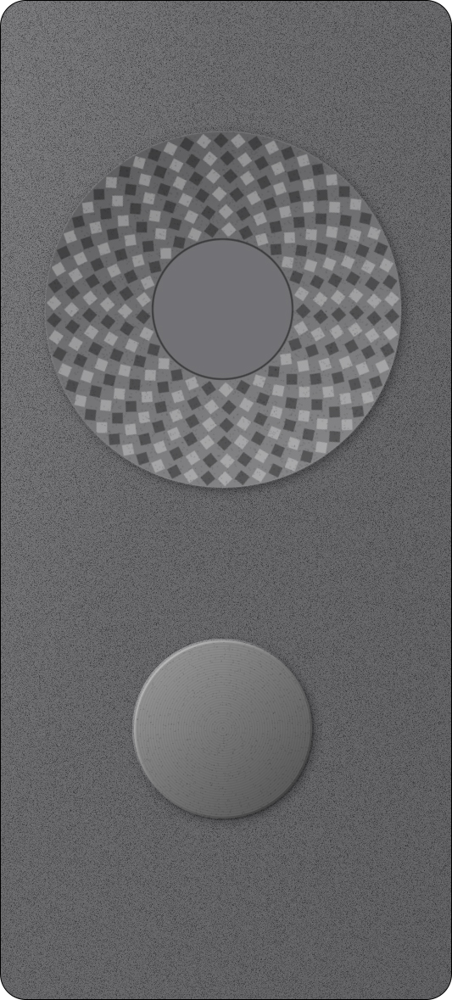
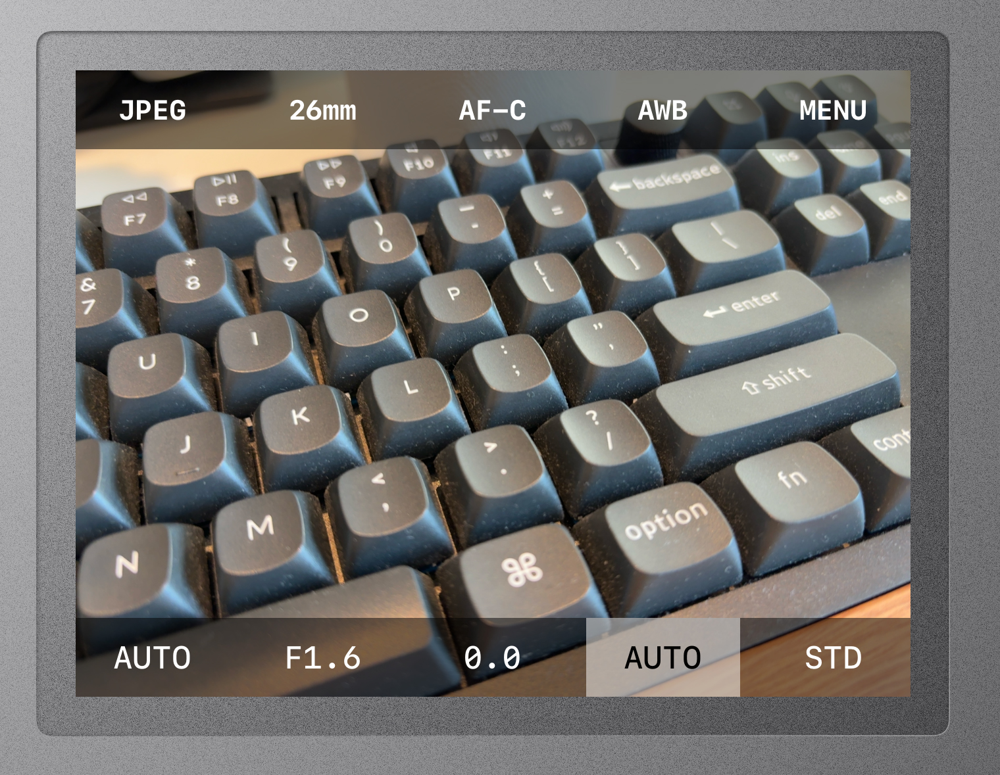
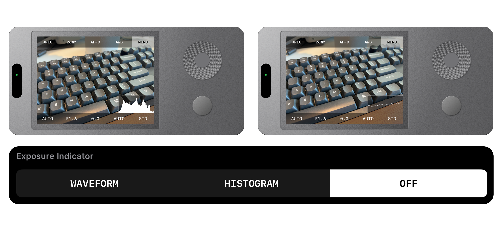
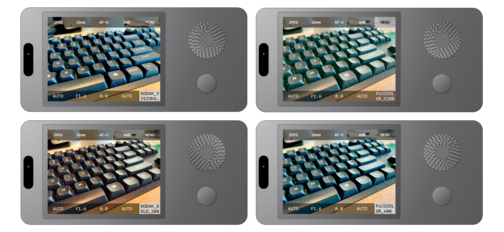

betterCam
Analog soul, modern precision.
Tactile
Feedback.
Simulated physical dials via the Taptic Engine. Feel every gear click.

Everything
in Reach.
Logical workflow for professional control.

Pro Tools.
Waveforms, Histograms, and AF-S mode for intentional creators.

Film Simulation.
Unleash Your
Creativity.

Ready to Capture?
Support betterCam
Scan to Donate via Alipay
If you enjoy betterCam, consider supporting its development.
© 2026 betterCam by Rice. All rights reserved.